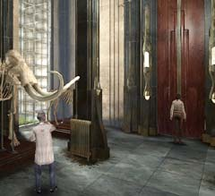

| 概要 | 地図 | |
| 淡いヒント集 | ヒント集 | 的確なヒント集 |
| 攻略最短ルート | Syberia 攻略へ |
| << 前の段階へ | 地域選択へ | 次の段階へ >> |
バロクシュタット
大学の奥にある扉
 ・この先には何があるのか? ・どうして扉が開かないのか? ・扉を開くのには何か条件があるのだろうか?
畑
 ・この畑はどこにあるのか? どうやれば、行くことができるのか? ・この畑では何が採れるのだろうか? ・ここで採れる作物は、何に使えるのだろうか?
鳥の形をしたカラクリ
 ・卵を見て何か思うことはあるだろうか? ・ここに見える卵は何かに使うことができるだろうか? 過去に見たものと照らし合わせてみよう。 ・卵を取るにはどうすればいいだろうか?
実験室
・どうすれば入れるのだろうか? 大学のどの部屋だろうか? ・ここは実験室である。いろいろな機材や、いろいろなものが置いてある。 ・よく調べて、役に立ちそうなもの重要なものを拝借することも必要である。 |
| << 前の段階へ | 地域選択へ | 次の段階へ >> |
| 概要 | 地図 | |
| 淡いヒント集 | ヒント集 | 的確なヒント集 |
| 攻略最短ルート | Syberia 攻略へ |
Syberia
| 目次へ戻る | ページの上部へ |